K10 — Angka dalam Gambar (17 soal)
1. K10-B2-077 ANL-ANGKA-GAMBAR · tier 1 · B2#77 · ganda
Tentukan angka pengganti tanda tanya dengan pola yang sama pada gambar di kiri.
Angka berapakah pengganti tanda tanya?
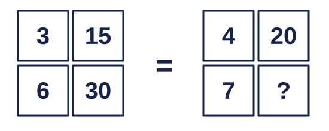
- 28
- 35
- 30
- 21
- 42
Pada setiap baris, kotak kanan = kotak kiri × 5: 3 × 5 = 15, 6 × 5 = 30, 4 × 5 = 20. Jadi ? = 7 × 5 = 35.
Opsi A (28) gugur karena mengalikan 7 dengan 4, padahal pengalinya selalu 5; Opsi C (30) gugur karena menyalin angka dari gambar pertama; Opsi D (21) gugur karena mengalikan dengan 3; Opsi E (42) gugur karena mengalikan dengan 6. Jawaban: Opsi B (35). Tips: cek aturan di dua baris contoh sekaligus sebelum memakainya.
Tentukan angka pengganti tanda tanya dengan pola yang sama pada gambar di kiri.
Angka berapakah pengganti tanda tanya?
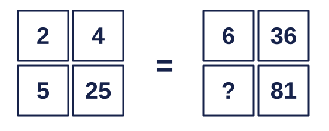
- 27
- 18
- 40,5
- 7
- 9
Kotak kanan = kuadrat kotak kiri: 2² = 4, 5² = 25, 6² = 36. Maka ?² = 81, sehingga ? = 9.
Opsi A (27) gugur karena membagi 81 dengan 3; Opsi B (18) gugur karena menganggap aturannya × 2 (2 → 4), padahal 5 → 25 menunjukkan kuadrat; Opsi C (40,5) gugur karena membagi 81 dengan 2; Opsi D (7) gugur karena menebak urutan 5, 6, 7. Jawaban: Opsi E (9). Tips: pasangan 2 → 4 bisa ×2 atau kuadrat; pakai pasangan lain (5 → 25) untuk memastikan.
Tentukan angka pengganti tanda tanya dengan pola yang sama pada gambar di kiri.
Angka berapakah pengganti tanda tanya?
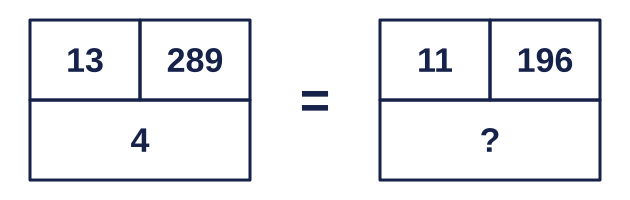
- 4
- 14
- 3
- 2
- 5
Kotak kanan atas = (kiri atas + bawah)²: (13 + 4)² = 17² = 289. Pada gambar kedua (11 + ?)² = 196, jadi 11 + ? = 14 dan ? = 3.
Opsi A (4) gugur karena menyalin angka bawah gambar pertama; Opsi B (14) gugur karena berhenti di √196 tanpa mengurangkan 11; Opsi D (2) gugur karena salah menganggap √196 = 13; Opsi E (5) gugur karena salah menganggap √196 = 16. Jawaban: Opsi C (3). Tips: bilangan besar seperti 289 atau 196 sering kuadrat; cari akarnya dulu.
Tentukan angka pengganti tanda tanya dengan pola yang sama pada gambar di kiri.
Angka berapakah pengganti tanda tanya?
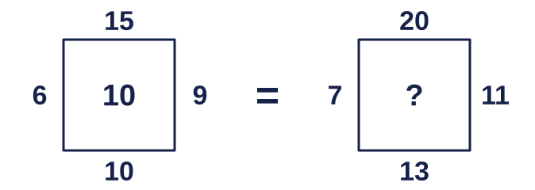
- 15
- 51
- 11
- 3
- 22
Pada gambar pertama: (atas + bawah) − (kiri + kanan) = (15 + 10) − (6 + 9) = 10, sesuai angka tengah. Gambar kedua: (20 + 13) − (7 + 11) = 33 − 18 = 15.
Opsi B (51) gugur karena menjumlahkan keempat angka sisi; Opsi C (11) gugur karena menghitung (atas − kiri) + (kanan − bawah); pada gambar pertama hasilnya 8, bukan 10; Opsi D (3) gugur karena menghitung (atas + kiri) − (kanan + bawah); pada gambar pertama hasilnya 2, bukan 10; Opsi E (22) gugur karena lupa mengurangkan angka sisi kiri. Jawaban: Opsi A (15). Tips: uji calon aturan pada gambar contoh; aturan yang tidak menghasilkan angka tengah langsung dibuang.
Tentukan angka pengganti tanda tanya dengan pola yang sama pada gambar di kiri.
Angka berapakah pengganti tanda tanya?
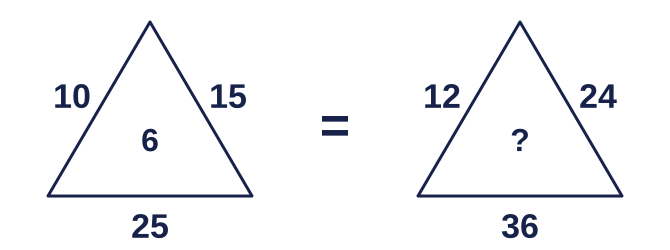
- 12
- 36
- 18
- 8
- 9
Alas = sisi kiri + sisi kanan (10 + 15 = 25), dan angka tengah = kiri × kanan : alas = 150 : 25 = 6. Gambar kedua: 12 × 24 : 36 = 288 : 36 = 8.
Opsi A (12) gugur karena menyalin angka sisi kiri; Opsi B (36) gugur karena menyalin angka alas; Opsi C (18) gugur karena membagi alas dengan 2; Opsi E (9) gugur karena membagi alas dengan 4. Jawaban: Opsi D (8). Tips: jika alas = jumlah kedua sisi, angka tengah sering hasil kali dibagi jumlah.
Tentukan angka pengganti tanda tanya dengan pola yang sama pada gambar di kiri.
Angka berapakah pengganti tanda tanya?
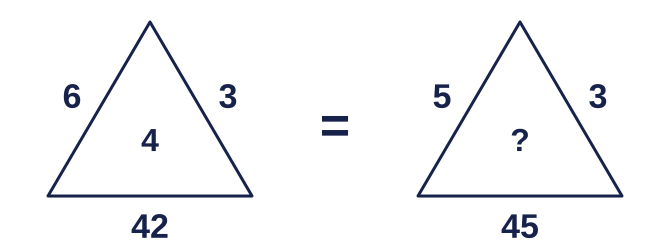
- 9
- 6
- 4
- 3
- 12
Alas = kiri × (tengah + kanan): 6 × (4 + 3) = 42. Gambar kedua: 5 × (? + 3) = 45, jadi ? + 3 = 9 dan ? = 6.
Opsi A (9) gugur karena membagi 45 dengan 5 tanpa mengurangkan angka kanan; Opsi C (4) gugur karena menyalin angka tengah gambar pertama; Opsi D (3) gugur karena memakai kiri × kanan × tengah; pada gambar pertama aturan itu menghasilkan 72, bukan 42; Opsi E (12) gugur karena membagi 45 dengan 3 lalu mengurangkan 3. Jawaban: Opsi B (6). Tips: jika alas habis dibagi angka kiri, coba bentuk kiri × (…).
Tentukan angka pengganti tanda tanya dengan pola yang sama pada gambar di kiri.
Angka berapakah pengganti tanda tanya?
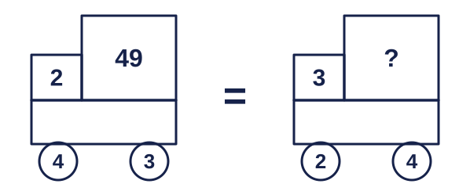
- 36
- 72
- 216
- 18
- 1.296
Kotak besar = (roda kiri + roda kanan) dipangkatkan angka kotak kecil: (4 + 3)² = 49. Gambar kedua: (2 + 4)³ = 6³ = 216.
Opsi A (36) gugur karena mengkuadratkan, padahal kotak kecil menunjukkan pangkat 3; Opsi B (72) gugur karena mengalikan (2 + 4)² dengan 2; Opsi D (18) gugur karena mengalikan (2 + 4) dengan 3; Opsi E (1.296) gugur karena memangkatkan 4. Jawaban: Opsi C (216). Tips: angka kecil di samping angka besar sering berperan sebagai pangkat.
Tentukan angka pengganti tanda tanya dengan pola yang sama pada gambar di kiri.
Angka berapakah pengganti tanda tanya?
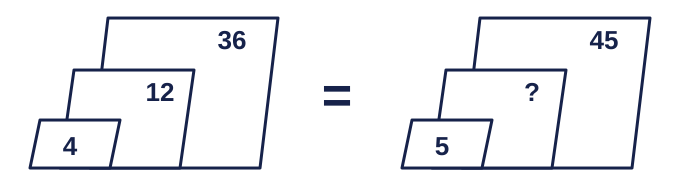
- 15
- 25
- 9
- 12
- 135
Dari kecil ke besar angkanya dikali tetap: 4 × 3 = 12, 12 × 3 = 36. Pada gambar kedua 5 → ? → 45 dengan pengali yang sama untuk kedua langkah: 5 × 3 = 15 dan 15 × 3 = 45.
Opsi B (25) gugur karena mengambil rata-rata 5 dan 45 (aturan selisih tetap), padahal contoh memakai rasio; Opsi C (9) gugur karena membagi 45 dengan 5; Opsi D (12) gugur karena menyalin angka tengah gambar pertama; Opsi E (135) gugur karena mengalikan 45 dengan 3, padahal suku tengah ada di antara 5 dan 45. Jawaban: Opsi A (15). Tips: suku tengah deret kali = akar (kecil × besar): √(5 × 45) = √225 = 15.
Tentukan angka pengganti tanda tanya dengan pola yang sama pada gambar di kiri.
Angka berapakah pengganti tanda tanya?
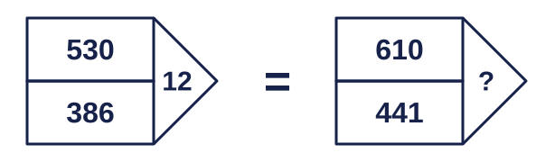
- 169
- 14
- 12
- 1.051
- 13
Selisih dua kotak = kuadrat angka di ujung panah: 530 − 386 = 144 = 12². Gambar kedua: 610 − 441 = 169 = 13², jadi ? = 13.
Opsi A (169) gugur karena lupa mengakarkan selisih; Opsi B (14) gugur karena salah menghitung √169; Opsi C (12) gugur karena menyalin angka dari gambar pertama; Opsi D (1.051) gugur karena menjumlahkan kedua angka, padahal yang dipakai selisihnya. Jawaban: Opsi E (13). Tips: selisih berupa 100, 121, 144, 169, 196, 225 hampir pasti kuadrat.
Tentukan angka pengganti tanda tanya dengan pola yang sama pada gambar di kiri.
Angka berapakah pengganti tanda tanya?
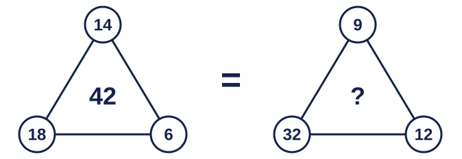
- 53
- 48
- 12
- 24
- 20
Angka tengah = atas × kiri : kanan: 14 × 18 : 6 = 252 : 6 = 42. Gambar kedua: 9 × 32 : 12 = 288 : 12 = 24.
Opsi A (53) gugur karena menjumlahkan ketiga lingkaran; Opsi B (48) gugur karena membagi dengan 6 (angka gambar pertama), bukan dengan 12; Opsi C (12) gugur karena menyalin angka lingkaran kanan; Opsi E (20) gugur karena menghitung 32 − 12. Jawaban: Opsi D (24). Tips: sederhanakan dulu sebelum mengalikan: 9 × 32 : 12 = 3 × 32 : 4 = 3 × 8 = 24.
Tentukan angka pengganti tanda tanya dengan pola yang sama pada gambar di kiri.
Angka berapakah pengganti tanda tanya?
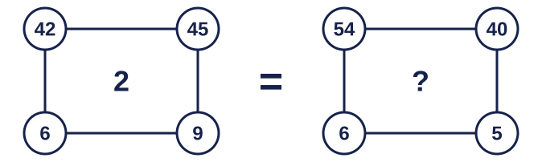
- 2
- 17
- 1
- 14
- 72
Angka tengah = (kiri atas : kiri bawah) − (kanan atas : kanan bawah): 42 : 6 − 45 : 9 = 7 − 5 = 2. Gambar kedua: 54 : 6 − 40 : 5 = 9 − 8 = 1.
Opsi A (2) gugur karena menyalin angka tengah gambar pertama; Opsi B (17) gugur karena menjumlahkan kedua hasil bagi (9 + 8); Opsi D (14) gugur karena hanya mengurangkan kedua lingkaran atas; Opsi E (72) gugur karena mengalikan kedua hasil bagi. Jawaban: Opsi C (1). Tips: pasangkan lingkaran yang segaris (atas–bawah) dulu; biasanya pasangan itu dibagi.
Tentukan angka pengganti tanda tanya dengan pola yang sama pada gambar di kiri.
Angka berapakah pengganti tanda tanya?
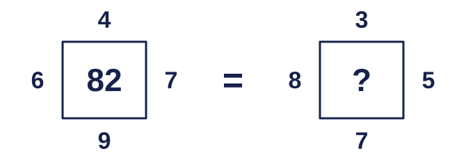
- 23
- 59
- 61
- 56
- 71
Angka tengah = kiri × bawah + atas × kanan: 6 × 9 + 4 × 7 = 54 + 28 = 82. Gambar kedua: 8 × 7 + 3 × 5 = 56 + 15 = 71.
Opsi A (23) gugur karena menjumlahkan keempat angka; Opsi B (59) gugur karena memasangkan atas × kiri dan kanan × bawah; pada gambar pertama aturan itu menghasilkan 87, bukan 82; Opsi C (61) gugur karena memasangkan kiri × kanan dan atas × bawah; pada gambar pertama hasilnya 78, bukan 82; Opsi D (56) gugur karena lupa menambahkan atas × kanan. Jawaban: Opsi E (71). Tips: ada tiga cara memasangkan empat angka; uji ketiganya pada gambar contoh.
Tentukan angka pengganti tanda tanya dengan pola yang sama pada gambar di kiri.
Angka berapakah pengganti tanda tanya?
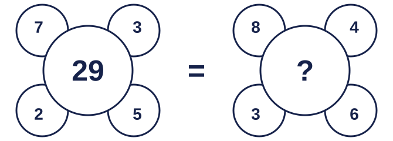
- 21
- 36
- 60
- 12
- 24
Angka tengah = (kiri atas × kanan bawah) − (kanan atas × kiri bawah): 7 × 5 − 3 × 2 = 35 − 6 = 29. Gambar kedua: 8 × 6 − 4 × 3 = 48 − 12 = 36.
Opsi A (21) gugur karena menjumlahkan keempat lingkaran kecil; Opsi C (60) gugur karena menjumlahkan kedua hasil kali, padahal dikurangkan; Opsi D (12) gugur karena hanya mengalikan kanan atas × kiri bawah; Opsi E (24) gugur karena mengalikan kiri atas × kiri bawah. Jawaban: Opsi B (36). Tips: pasangan diagonal (silang) sering dipakai bersama; coba kali silang dulu.
Jika 12 + 4 = 28, 6 + 8 = 20, dan 9 + 10 = 28, maka 15 + 7 = …
- 37
- 22
- 44
- 29
- 36
Tanda + di sini berarti angka pertama dikali 2 lalu ditambah angka kedua: 2×12 + 4 = 28, 2×6 + 8 = 20, 2×9 + 10 = 28. Jadi 15 + 7 = 2×15 + 7 = 37.
Opsi B (22) gugur karena memakai penjumlahan biasa; Opsi C (44) gugur karena menggandakan kedua angka, padahal hanya angka pertama; Opsi D (29) gugur karena yang digandakan angka kedua; Opsi E (36) gugur karena dikurangi 1 di akhir, padahal tidak ada pengurangan. Jawaban: Opsi A (37). Tips: dua contoh dengan hasil sama (28) tapi angka berbeda adalah petunjuk bobot tiap angka tidak sama.
Jika 3 ⊗ 2 = 36 dan 4 ⊗ 5 = 400, maka 6 ⊗ 3 = …
- 18
- 81
- 36
- 324
- 648
36 = (3 × 2)² dan 400 = (4 × 5)². Jadi a ⊗ b = (a × b)², sehingga 6 ⊗ 3 = 18² = 324.
Opsi A (18) gugur karena hanya mengalikan tanpa mengkuadratkan; Opsi B (81) gugur karena memakai (a + b)²; pada contoh pertama aturan itu menghasilkan 25, bukan 36; Opsi C (36) gugur karena menyalin hasil contoh pertama; Opsi E (648) gugur karena mengalikan hasil kuadrat dengan 2. Jawaban: Opsi D (324). Tips: hasil yang berupa kuadrat sempurna (36, 400) memberi petunjuk ada pangkat dua.
Dengan A = 1, B = 2, …, Z = 26, nilai KAKI = 11 + 1 + 11 + 9 = 32. Berapakah nilai MATA − DADA?
- 24
- 26
- 25
- 35
- 45
MATA = 13 + 1 + 20 + 1 = 35. DADA = 4 + 1 + 4 + 1 = 10. Selisihnya 35 − 10 = 25.
Opsi A (24) gugur karena menganggap T = 19; Opsi B (26) gugur karena menganggap T = 21; Opsi D (35) gugur karena lupa mengurangkan DADA; Opsi E (45) gugur karena menjumlahkan MATA dan DADA. Jawaban: Opsi C (25). Tips: hafalkan patokan E = 5, J = 10, O = 15, T = 20, Y = 25 supaya nilai huruf cepat ketemu.
Dalam sebuah bahasa sandi, "tamo rilu" berarti "kucing hitam", "pevo rilu" berarti "rumah hitam", dan "pevo senka" berarti "rumah besar". Apa sandi untuk "kucing besar"?
- senka tamo
- tamo senka
- pevo senka
- tamo rilu
- rilu senka
Kata yang sama di dua kalimat menunjukkan artinya. "rilu" muncul pada "kucing hitam" dan "rumah hitam", jadi rilu = hitam, tamo = kucing, pevo = rumah. Dari "pevo senka" = "rumah besar", senka = besar. Urutannya benda lalu sifat, jadi "kucing besar" = "tamo senka".
Opsi A (senka tamo) gugur karena urutannya terbalik; pada sandi ini benda disebut dulu, lalu sifatnya; Opsi C (pevo senka) gugur karena pevo berarti rumah, bukan kucing; Opsi D (tamo rilu) gugur karena rilu berarti hitam; Opsi E (rilu senka) gugur karena tidak memuat sandi untuk kucing. Jawaban: Opsi B (tamo senka). Tips: cari kata yang muncul di dua kalimat sekaligus; itu kunci pembukanya.